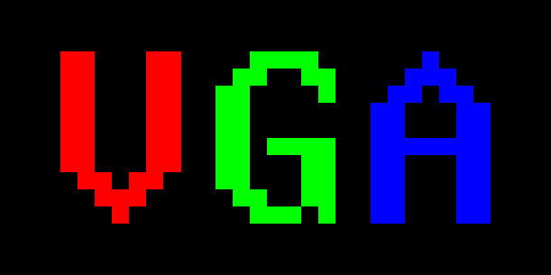

VGA · 05
Herní assety a velké světy
Jan Matoušek · FIT ČVUT · 22. 10. 2026
Nativní přepis všech 52 stran: formáty, komprese, pipeline, serializace, virtuální souborové systémy a dělení prostoru.
Původní ilustrace a PDF jsou zachované. Výkladové fragmenty nejsou samostatné spustitelné projekty. Poznámky označené GRAFIT a paměťový model jsou doplněk.
